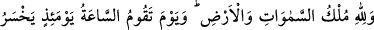
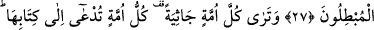
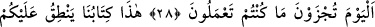
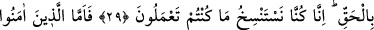
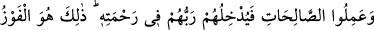
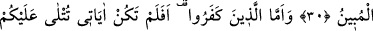
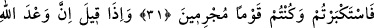
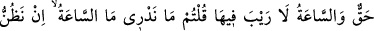
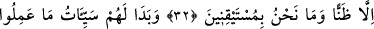
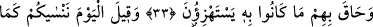
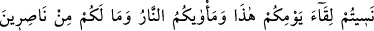
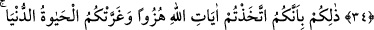
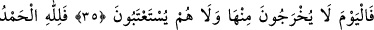
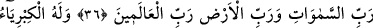
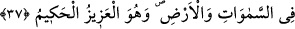
O GÜN HER ÜMMETİ,
DİZ ÇÖKMÜŞ GÖRÜRSÜN
27. Göklerin ve yerin mülkü Allah’ındır. Kıyâmetin kopacağı gün var ya, işte o
gün bâtıla sapanlar hüsrana uğrayacaklardır.
28. O gün her ümmeti, diz çökmüş görürsün. Her ümmet kendi kitabına çağırılır,
(onlara şöyle denilir:) «Bu gün, yaptıklarınızla cezalandırılacaksınız!»
29. «Bu, yüzünüze karşı gerçeği söyleyen kitabımızdır. Çünkü biz, yaptıklarınızı
kaydediyorduk.»
30. İnanıp iyi işler yapanlara gelince, Rableri onları rahmetine kabul eder. İşte
apaçık kurtuluş budur.
31. Ama inkâr edenlere gelince onlara: Âyetlerim size okunmuş, siz de
büyüklenip suçlu bir toplum olmuştunuz, değil mi? denilir.
32. «Allah’ın vaadi gerçektir, kıyâmet gününde şüphe yoktur» dendiği zaman:
Kıyâmetin ne olduğunu bilmiyoruz, onun bir tahminden ibaret olduğunu sanıyoruz;
(onun hakkında) kesin bir bilgi elde etmiş değiliz, demiştiniz.